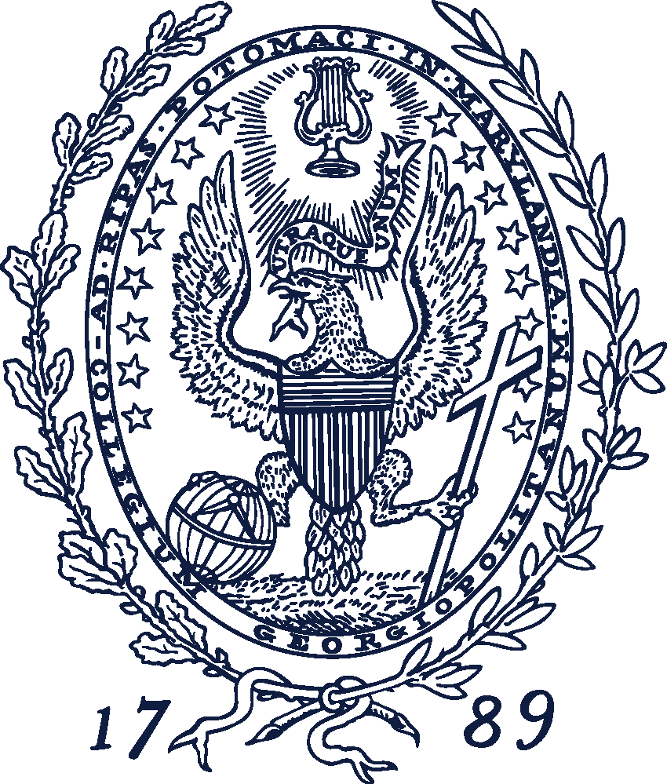
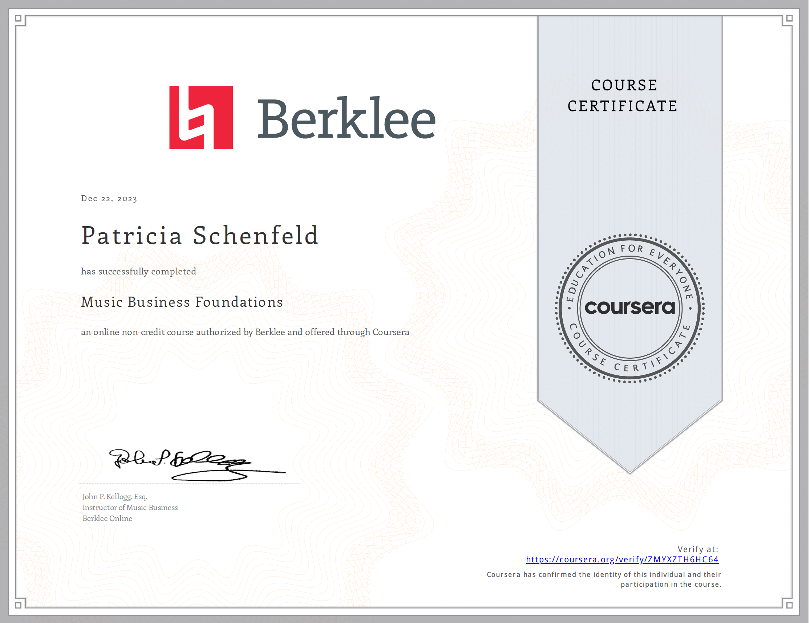
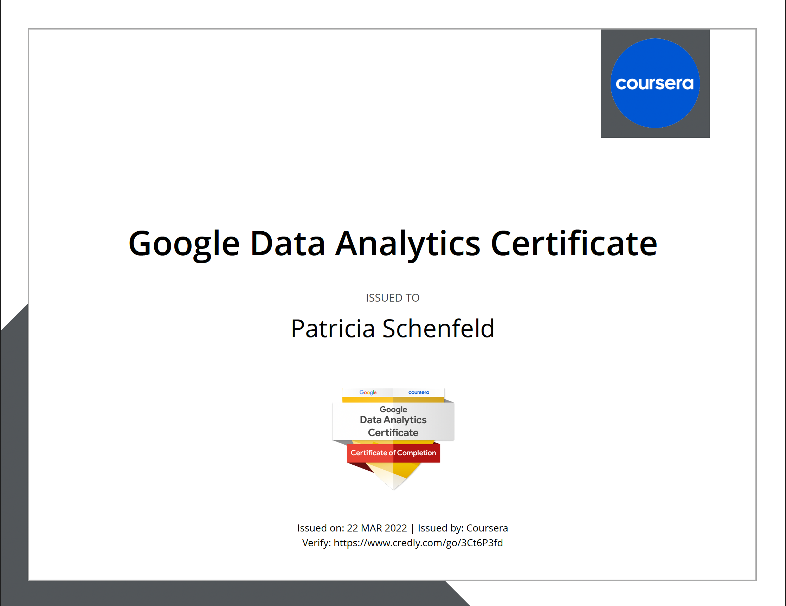

About Patricia Schenfeld
I work in Trust & Safety with a focus on advertising policy, helping to ensure a safe and compliant experience across digital platforms. I bring a background in data science, analytics, and consulting (KPMG), and recently completed my Master’s in Data Science & Analytics at Georgetown. I’m driven by curiosity, clarity, and impact, especially at the intersection of data, policy, and platform integrity.
Education
Georgetown University, MS Data Science & Analytics
Washington, DC | May 2025

- Merit scholarship
- GPA: 4.0
- Chair of Social Committee
University of Delaware, BS Management Information Systems
Newark, DE | May 2021

- Magna Cum Laude (top 5%)
- Honors: Panel of Distinguished MIS Seniors, Dean’s List (all 8 semesters), GPA: 3.9, University of Delaware Presidential Scholarship (merit)
- Study abroad: Australia and Thailand (Winter 2020), Switzerland and Italy (Summer 2019)
Experience
Spotify Associate Public Policy Specialist
Washington, DC | April 2025 - Present

- Enforce and optimize advertising policies across global markets, ensuring brand safety and compliance while supporting monetization strategy through scalable review operations and continuous policy refinement.
Spotify Trust and Safety Intern, Monetization Operations
New York, NY | June - August 2024
- Defined, communicated, and enforced stance on advertising and monetization policy issues across podcasts, music, and all other forms of content
- Conducted risk assessments and global regulatory research on new revenue opportunities and trends within content
- Advised and lead high-profile and time-sensitive investigations into potential policy violations across content and advertisements
- Lead enforcement efficiency projects and developed business cases for product and policy enhancements
- Analyzed vendor ad review metrics, including ad volume per language, identifying coverage gaps that led to a 50% increase in staffing efficiency, optimizing workflows, and ensuring complete coverage of incoming ad volume
- Built a business case and automation logic for auto-rejecting ads based on advertising categories, reducing agent review time and cutting operational costs
KPMG Governance, Risk & Compliance Advisory Associate
Stamford, CT | July 2021 - August 2023
- Conducted external IT Audit for a leading home/personal products company and regional banks
- Performed IT Application Control testing
- Managed offshore team; lead meetings, assigned and reviewed audit deliverables
- Established, executed, and communicated risk and compliance objectives for a major hardware firm
- Assessed design and implementation of IT controls against internal policies and best practices to develop Risk Control Matrices to strengthen internal control environments
- Collaborated on recommendations for attaining future state objectives
- Assumed additional responsibilities when no senior staff were on engagements
- Team winner of Power BI and Alteryx Data Driven Project
KPMG Technology Assurance Intern
New York, NY | Summer 2020
- Converted to virtual program due to COVID-19
Technical Skills


Certificates
Music Business Foundations (via Coursera), December 2023

Google Data Analytics (via Coursera), March 2022

Activities and Volunteering
- Chair of Georgetown Data Science Social Committee
- KPMG, Governance, Risk and Compliance People Connectivity Committee
- Phi Chi Theta Professional Business Fraternity, Founding Member of UD Chapter
- University of Delaware Club Tennis Team
- Girl Scouts, Ambassador Level - Silver Award: Created/taught a music program for underserved children